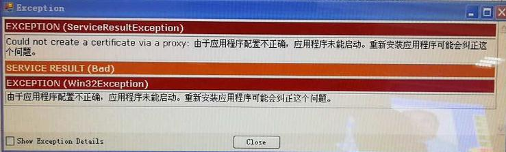

Could not create a certificate via a proxy
Could not create a certificate via a proxy: Input file was not processed properly

The error appears because the CertificateGenerator tool cannot be found on the local machine.
The OPC UA .NET Development Toolkit SDK uses the Opc.Ua.CertificateGenerator.exe utility to create a new self signed instance certificate if one does not exist. The CertificateGenerator tool is provided by the OPC Foundation as part of the standard "Local Discovery Server" installation. This utility is also installed by the Softing OPC UA .NET Development Toolkit installation package and by the Softing OPC UA .Net DemoServer setup. It should be located in
\Program Files\Common Files\OPC Foundation\UA\v1.0\Bin.
If isn't installed in this location, the SDK also looks for this utility in the same folder as the application.
The problem can be fixed by copying the .exe file of the tool from another machine where Softing .NET Toolkit is installed.
If the thumbprint was explicitly specified in the configuration file of the application, it can also cause that a new certificate cannot be generated. The “Thumbprint” entry in the SecurityConfiguration\ApplicationCertificate path needs to be removed before a new self signed certificate can be created. Also, if the “SubjectName” has the format [CN=ApplicationName, DC=domain], the format must be reduced to contain only the [ApplicationName].
Another problem might be that the file path where the application is located is too long. In this case, the application folder should be moved to a lower level in the folder structure (e.g. directly on the root folder).
http://www.opclabs.com/forum/ua-connections/1309-ua-client-certificates